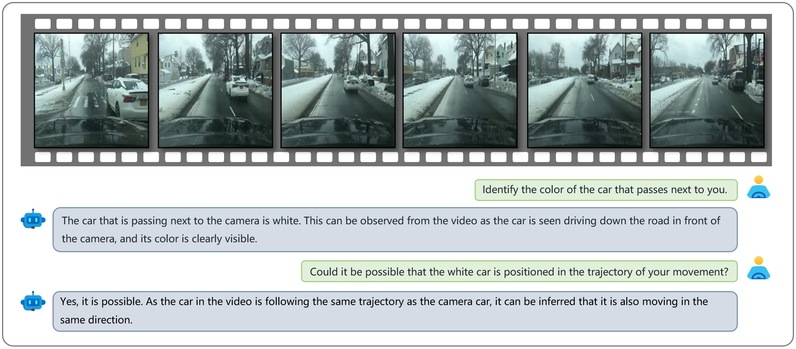
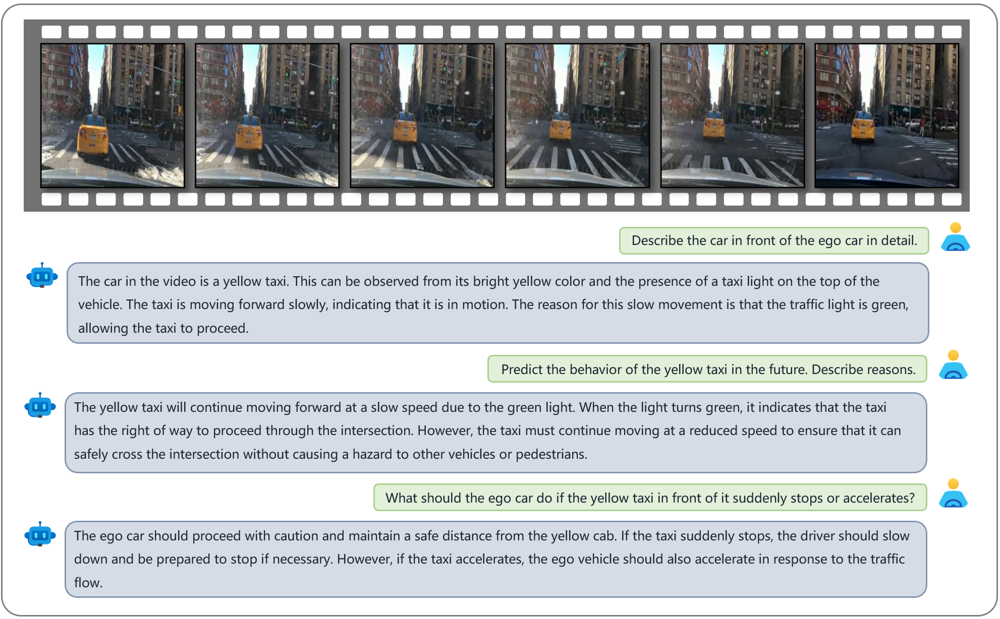

Abstract
The quest for fully autonomous vehicles (AVs) capable of navigating complex real-world scenarios with human-like understanding and responsiveness. In this paper, we introduce Dolphins, a novel vision-language model architected to imbibe human-like driving abilities. Dolphins is adept at processing multimodal inputs comprising video (or image) data, text instructions, and historical control signals to generate informed outputs corresponding to the provided instructions. Building upon the open-sourced pretrained Vision-Language Model, OpenFlamingo, we tailored Dolphins to the driving domain by constructing driving-specific instruction data and conducting instruction tuning. Through the utilization of the BDD-X dataset, we designed and consolidated four distinct AV tasks into Dolphins to foster a holistic understanding of intricate driving scenarios. As a result, the distinctive features of Dolphins are delineated into two dimensions: (1) the ability to provide a comprehensive understanding of complex and long-tailed open-world driving scenarios and solve a spectrum of AV tasks, and (2) the emergence of human-like capabilities including gradient-free rapid learning and adaptation via in-context learning, reflection and error recovery, and interpretability.
Perception (Scenario Understanding)
An example showcasing Dolphins’s capability in scenario understanding. The video features an ego car driving in a tunnel. Dolphins can identify the environment in which the ego car is situated and accurately determine the color of the front vehicle as well as infer the current time.
Perception (Scenario Understanding)
An example showcasing Dolphins’s capability in scenario understanding. The video features an ego car driving on a snowy street. Dolphins can identify the environment in which the ego car is situated, the presence of the traffic light, and accurately determine the color of the passing vehicle.
Perception (Scenario Understanding)
An example showcasing Dolphins’s capability in scenario understanding. The video shows an ego car stopped at a busy interaction with a police car next to it. Dolphins can identify the police officer and police car with its emergency lights on.
Perception (Scenario Understanding)
An example showcasing Dolphins’s capability in scenario understanding and behavior understanding. The video features an ego car stopping at an intersection on a rainy day. Dolphins comprehensively describes the environment in which the ego car is situated, the behavior of the ego car, and can infer the reasons for its behavior.
Perception (Scenario Understanding)
An example showcasing Dolphins’s capability in scenario understanding and behavior understanding. The video features an ego car making a right turn. Dolphins can identify these contents. Words means hallucination.
Perception (Scenario Understanding)
An example showcasing Dolphins’s capability in scenario understanding and behavior understanding. The video shows an ego car following a taxi and going through an intersection. Words means hallucination.
Perception (Scenario Understanding)
An example showcasing Dolphins’s capability in scenario understanding and behavior understanding. The video shows an ego car driving slowly on a busy road at night. Dolphins can identify the ego car traveling at a slow speed and infer that the reason is that the speed of the vehicle ahead is restricting the ego car's speed.
Prediction and Planning
An example showcasing Dolphins's capability in prediction. The video features an ego car driving on a snowy street. Dolphins can predict the trajectory of the white car passing by it. Since both the white car and the ego car are traveling in the same direction on a one-way road, the trajectories of both cars temporarily overlap.

Prediction and Planning
An example showcasing Dolphins's capability in prediction. The video shows an ego car making a U-turn. Dolphins can predict the trajectory of the black car parked in front of it. Since the black car in front is currently parked on the side of the road, Our model predicts that the car will remain there in the future and will not be positioned in the ego car's trajectory of turning.
Prediction and Planning
An example showcasing Dolphins's capability in planning. Dolphins can also understand control signals and employ them to predict the speed and turn angle of the ego car next second. Additionally, We can try to have Dolphins make a plan for the ego car to assist the driver during driving. However, due to the lack of sufficient information, such as the map, driving destination, etc., the plan is still limited to a brief period in the future.
Prediction and Planning
An example showcasing Dolphins's capability in planning. The video features an ego car driving on a dark city street. Dolphins can recognize that the ego car is approaching an intersection with a red traffic light, so it plans the future behavior for the ego car, which should be to come to a stop and wait for the traffic light to turn green to pass through the intersection safely.
Prediction and Planning
An example showcasing Dolphins's capability in planning. The video features an ego car driving on a highway and a white car is parked in front of it. Dolphins, by assessing that the white car in front has come to a stop, plans for the future behavior of the ego car, which should involve changing lanes to the left to avoid a collision with the stationary white car.
Prediction and Planning
An example showcasing Dolphins's capability in prediction and contingency planning. The video shows an ego car following a taxi and going through an intersection. On one hand, Dolphins can predict the future behavior of the yellow taxi for a certain period. On the other hand, Dolphins can make reasonable contingency plans for the ego car in case the yellow taxi in front suddenly accelerates or comes to a stop.

Prediction and Planning
An example showcasing Dolphins's capability in prediction and contingency planning. The video features an ego car driving in a snowy sity street on a rainy day. Dolphins can predict the future behavior of the white van in front of it while making reasonable contingency plans for the ego car in case the white decelerates or turns right.
Prediction and Planning
An example showcasing Dolphins's capability in planning. The video features an ego car driving on a highway on a rainy day. Dolphins is asked about the information regarding the black car to the right of the ego car, and it accurately determined that the black car's lane change would not affect the ego car's trajectory because they are separated by two lanes.
Rapid Learning and Adaptation
Three examples show our model enables rapid adaptation to unseen instructions through in-context learning. In the first two examples, Dolphins learns to play the role of the driver through in-context examples and can accurately describe its behavior, despite not having been trained on such instructions. The third example shows that Dolphins can learn common sense from in-context examples, such as not being able to judge the current time based on the light when inside a tunnel.
Rapid Learning and Adaptation
An example showcasing Dolphins's capability in prediction through in-context learning. Dolphins can reason for future events that have not yet happened. Through in-context examples, our model can learn to answer "What If"-style questions, to imagine the behavior of the ego car in the future by language.
Reflection and Error Recovering
An example showcasing Dolphins's capability in reflection. The video features an ego car driving down a snow-covered city street. The black vehicle in front of the ego car appears to want to change to the left lane, which would be positioned on the ego car's trajectory. Initially, Dolphins plans for the ego car to slow down and let the black car turn left. However, after being provided with information about the 'straight has the right of way' traffic rule, Dolphins reflects and revises the driving plan.
Reflection and Error Recovering
An example showcasing Dolphins's capability in reflection. The video shows an ego car driving through an interaction with a white car coming from the opposite direction. Initially, Dolphins plans for the ego car to slow down and let the white car proceed. However, after being provided with information about the human driver decision, Dolphins reflects and revises the driving plan.

Reflection and Error Recovering
An example showcasing Dolphins’s capability in reflection. The video shows an ego car driving on a highway. Initially, Dolphins predicts that the white car in front of the ego car will continue to drive forward. However, after being provided with information about the human driver decision, Dolphins revises the wrong prediction and realizes that the ego car should have also stopped to avoid the white car that is about to stop and merge into the left lane.
Reflection and Error Recovering
An example showcasing Dolphins’s capability in reflection. The video shows an ego car stopping behind a black car. Initially, Dolphins plans for the ego car to remain stopped and wait for the traffic. However, after being provided with information about the human driver decision~(driving more aggressively), Dolphins reflects and plans for the ego car to change lanes to the left to continue moving forward when careful attention is paid to cars traveling the left lane, such as a white van.
Reflection and Error Recovering
An example showcasing Dolphins’s capability in reflection. The video features an ego car driving through an interaction on a city street. The black vehicle in front of the ego car appears to want to turn right as its right taillight is flashing. Initially, Dolphins predicts that the black car will continue to drive forward. However, after being provided with information about the 'slashing rear lights indicate a turn or lane change.' traffic rule, Dolphins reflects and revises the wrong prediction.
Interactive Conversation
An example showcasing Dolphins's capability in interactive conversation. The video features an ego car stopping at an intersection on a rainy day. And Dolphins can answer various questions in terms of the weather, the traffic lights, and how they affect driving.
Interactive Conversation
An example showcasing Dolphins's capability in interactive conversation. This video shows an ego car stopped at an intersection waiting for a red light and a pedestrian crossing a zebra crossing. We can ask Dolphins some questions about what it’s paying attention to at this intersection.
Interactive Conversation
An example showcasing Dolphins's capability in interactive conversation. In this video, there are no traffic lights, so the ego car just needs to pay attention to the pedestrians.
Interactive Conversation
An example showcasing Dolphins's capability in interactive conversation. This video shows an ego car driving behind a bicyclist. By conversing with Dolphins, we can learn how to drive safely when there are cyclists nearby. And our model can also create a tagline for this scene.
Failure Example
An example showcasing Dolphins's capability in interactive conversation. The video features an ego car stopping at an intersection on a rainy day. And Dolphins can answer various questions in terms of the weather, the traffic lights, and how they affect driving.
Failure Example
An example showcasing Dolphins's capability in interactive conversation. This video shows an ego car stopped at an intersection waiting for a red light and a pedestrian crossing a zebra crossing. We can ask Dolphins some questions about what it’s paying attention to at this intersection.
Failure Example
An example showcasing Dolphins's capability in interactive conversation. In this video, there are no traffic lights, so the ego car just needs to pay attention to the pedestrians.
Interactive Conversation
An example showcasing Dolphins's capability in interactive conversation. This video shows an ego car driving behind a bicyclist. By conversing with Dolphins, we can learn how to drive safely when there are cyclists nearby. And our model can also create a tagline for this scene.
BibTeX
@misc{ma2023dolphins,
title={Dolphins: Multimodal Language Model for Driving},
author={Yingzi Ma and Yulong Cao and Jiachen Sun and Marco Pavone and Chaowei Xiao},
year={2023},
eprint={2312.00438},
archivePrefix={arXiv},
primaryClass={cs.CV}
}